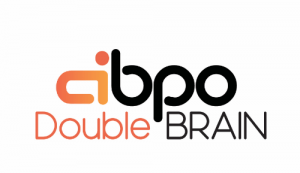

AI-BPO「Double BRAIN」
AI-BPO
「Double BRAIN」

 対話型AI -Conversational AI-
対話型AI -Conversational AI-
 ボイスボット
ボイスボット
 AI研究開発
AI研究開発
 通訳・翻訳
通訳・翻訳
 AI・自動受付システム
AI・自動受付システム
 声紋認証
声紋認証
 機密情報共有・管理
機密情報共有・管理
 契約書管理システム
契約書管理システム
 ワークステーション
ワークステーション
 AIカメラ
AIカメラ

 インボイス制度対応システム
インボイス制度対応システム
 データセットの収集・購入
データセットの収集・購入
 コールセンター
コールセンター
 人事・総務向け
人事・総務向け
 インバウンド対策
インバウンド対策
 コンバージョンアップ
コンバージョンアップ
 KYT・危険予知で労働災害防止
KYT・危険予知で労働災害防止
 無料AI活用
無料AI活用
 顧客リスト自動生成
顧客リスト自動生成
 ロボットで自動化
ロボットで自動化
 LINE連携
LINE連携
 セキュリティー強化
セキュリティー強化
 テレワーク導入
テレワーク導入
 AI学習データ作成
AI学習データ作成
 配送ルート最適化
配送ルート最適化
 非接触AI
非接触AI
 受付をAIで自動化、効率化
受付をAIで自動化、効率化
 AIリテラシーの向上サービス
AIリテラシーの向上サービス
 日本語の手書き文字対応AI-OCR
日本語の手書き文字対応AI-OCR
 Windows作業の自動化RPAツール
Windows作業の自動化RPAツール
 リスク分析AIで与信管理
リスク分析AIで与信管理
 紙帳票仕分けAI-OCRサービス
紙帳票仕分けAI-OCRサービス
 サプライチェーン
サプライチェーン
 自治体向けAI
AIコンサルティング
自治体向けAI
AIコンサルティング

[AIsmily AI PRODUCTS AWARD 2023•秋 受賞]
各企業のデータに合わせて、生成AIの性能を
向上させるプロフェッショナルSaaS
回答の質や正確性が求められる高精度なLLM活用に特化したサービスです。生成SaaSです。


各社のAI環境に人間同様の推論力を
生成AIの精度を向上させるためは「RAG,Fine-tuning」など様々なアプローチがあります。 各企業様のデータに合わせた最適な手段を、オーダーメイドで構築します。

類似値80％以上の精度を保証
あらゆる質問を想定した精度保証のロジックを実装し、クライアント様との信頼を積み重ねています。ビジネス品質にコミットすることで、ユーザーに理想的なAI体験を提供します。

多数のオーダーメイド実績

Kansanareは、人間中心設計(HCD)のプロセスによりUI/UX開発された、親切で使いやすいチャットボットです。
利用者がストレスを感じずに自然な会話ができるように設計されているため、より良いユーザーエクスペリエンスを提供できます。
私たちカサナレ株式会社は、GenerativeAIを用いた「より良いデジタルコミュニケーション」を創出することで、導入企業のブランド価値を高め、顧客ロイヤルティ向上につながるサポートを提供しています。


開発が決定してから導入まで約1～2ヶ月ほどで完了します。ご負担いただく工数は10時間以内の例も多くございます。
また、開発後も分析サポートやデータのフィードバックを行い、「導入だけで終わらない」質の高いサポートを提供します。

Kasanareは、回答の質や正確性が求められる高精度なLLM活用に特化したサービスです。生成AIに「人間と同等の推論力」を与えるための、「環境構築/能力の向上/RAGの運用」がセットになったオールインワンSaaSです。
AI製品・ソリューションの掲載を
希望される企業様はこちら